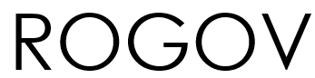
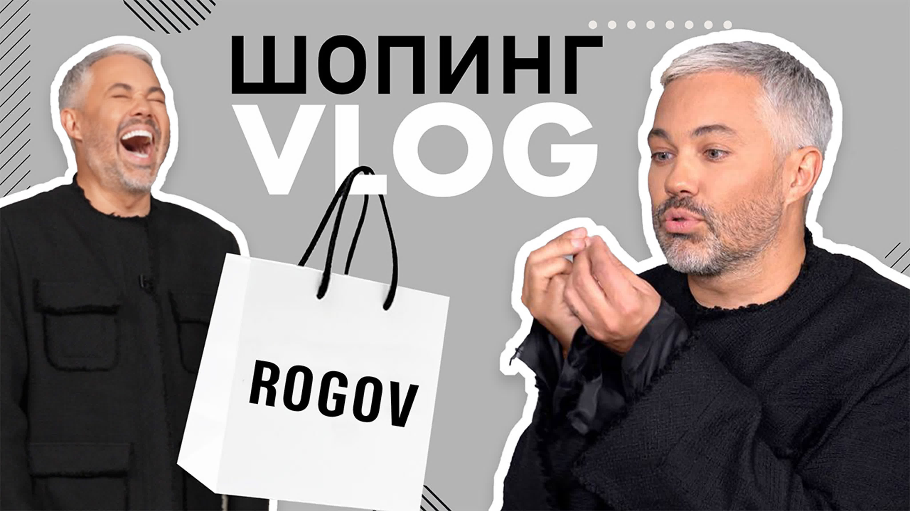
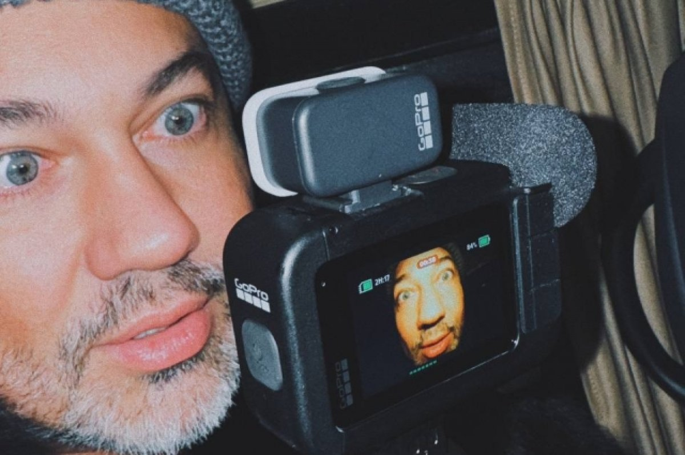
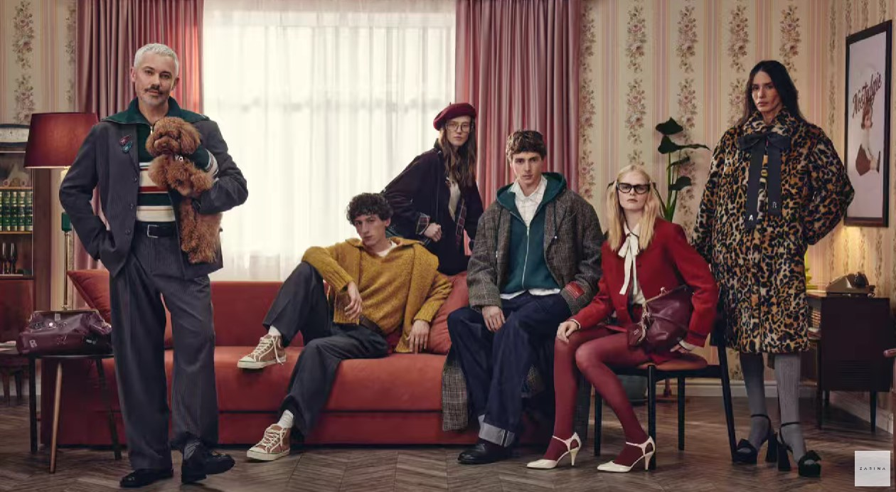
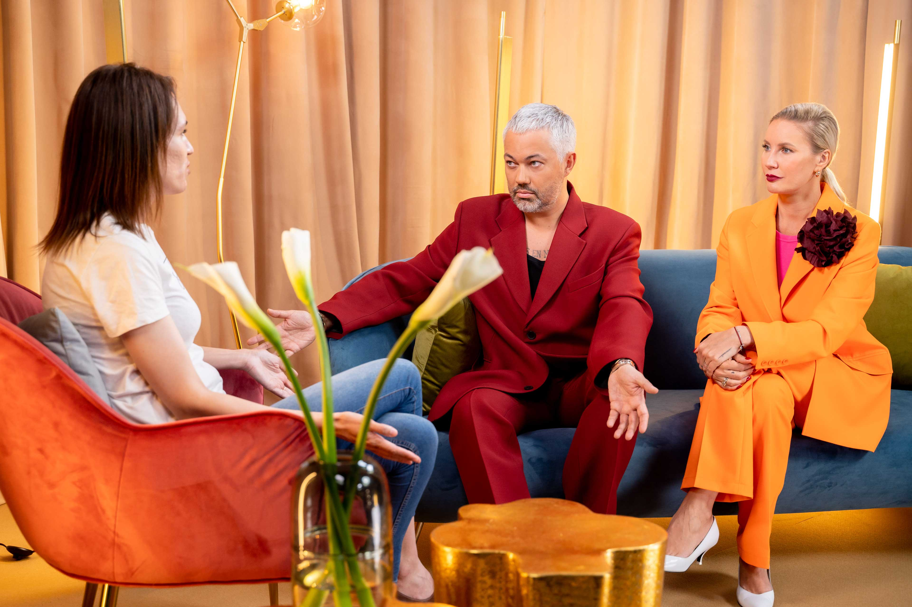
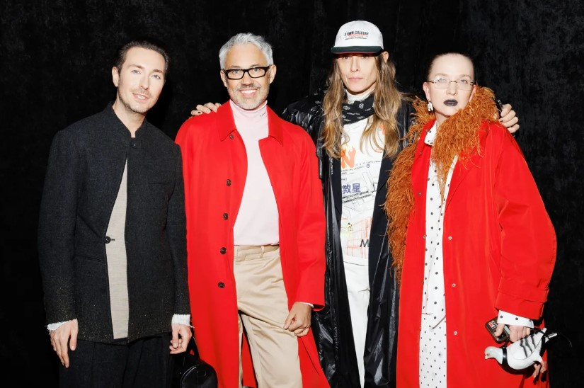
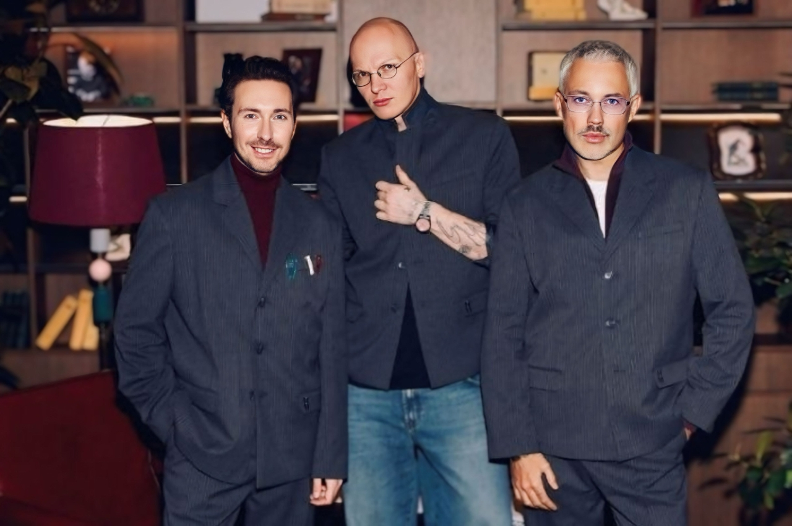

Стилист, телеведущий, эксперт моды
«Стиль — это продолжение вашей личности»
Записаться на консультациюЯ родился в Воронеже. Родители видели меня врачом, но я понял, что моё призвание совсем в другом. Первый раз я осознанно задумался о стиле в старших классах: покупал вещи в секонд-хендах, перешивал их, брал модные вещи из шкафа дяди — он был настоящим стилистом 70-х.
Мой путь к моде начался с телевидения - вместе с друзьями сделали пилот собственной программы. Это был мой первый шаг в медиа. Параллельно я выиграл грант в Школу телевизионного мастерства Владимира Познера и уехал покорять Москву.
Столица встретила жёстко: кастинги шли один за другим, меня никто не брал. Тогда я пошёл другим путём — ушёл в глянец. Я работал с такими изданиями, как Harper’s Bazaar, Esquire, ELLE, занимался постановкой презентаций для Dior, Lexus и других брендов. Я набивал руку, создавал себе имя в индустрии. В 2008 году я вернулся на ТВ уже как главный редактор программы «Гид по стилю» на MTV, а затем стал судьёй проекта «Шопоголики» — именно тогда пришла настоящая популярность.
С 2014 года я больше 10 лет работаю на СТС с проектами «Успеть за 24 часа», «Рогов в городе», «Рогов в деле», где я занимаюсь преображением людей. А с 2024 года я веду легендарный «Модный приговор» на Первом канале. Для меня стиль — это индивидуальность, уважение к себе и умение слышать себя. Я выпустил книгу «Гид по стилю», у меня есть собственный бренд одежды ROGOV, и я продолжаю доказывать, что стильным может быть каждый.
Превращаю образы в стиль, который работает на Вас

Полный разбор гардероба, определение цветотипа и построение капсул. Помогаю не просто купить вещи, а создать фундамент, на котором будет строиться любой образ. Это инвестиция в себя на годы.

Стилизация для фешн-съёмок, обложек журналов, шоу-румов и рекламных кампаний.
Работаю с артистами, блогерами, телеведущими и топ-менеджерами. Помогаю найти узнаваемый, запоминающийся и при этом работающий на образ стиль.
Пошаговая система создания Вашего стиля
Анализируем Ваш текущий гардероб, образ жизни, цели. Проводим цветотипирование и определяем особенности фигуры.
Создаём визуальный мудборд, подбираем фасоны, ткани и цвета. Формируем базу гардероба.
Совместный шопинг (или онлайн-подбор) вещей. Никаких спонтанных покупок — только то, что идеально сядет и впишется в капсулу.
Составляем 20+ готовых комплектов из Вашего обновлённого гардероба на все случаи жизни. Вы больше никогда не будете задавать вопрос «что надеть».
Как дизайнер и стилист знаменитостей

Коллаборация Zarina x ROGOV

Александр Рогов и Елена Летучая

Александр Рогов на Московской неделе моды с Алексеем Сухаревым

Александр Рогов с Алексеем Сухаревым и Гошей Карцевым
Примерьте стиль вживую
Москва, Шлюзовая набережная, 2А
Ежедневно: 12:00 – 21:00
Здесь представлена вся линейка одежды и аксессуаров под брендом Александра Рогова. Можно не только купить, но и получить консультацию стилиста.